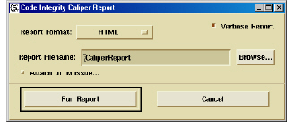

Generating a Quality Assessment Report
1 In a Caliper window, click Generate Report.
The DIScover Caliper Report dialog box appears.

2 In the Report Filename field, type the path and name of the report. To browse to the location where you want to save the report, click Browse.
3 To attach the QAR to an Integrity Manager issue, see Attaching Quality Assessment Reports to Integrity Manager Issues.
4 Click Run Report.
The QAR appears.
Note: Using your editor of choice, you can also customize your QAR to add important details such as your name or branch of development, or additional data surrounding the generation of the report, if you choose.